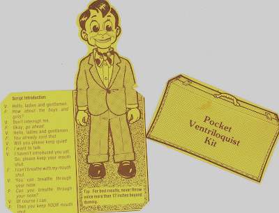
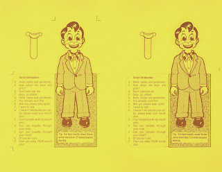

Pocket Ventriloquist Kit
9/1/2010
{kind=link}

Business card collector, Jeff Walters, sent me several questions about my Maher "Talking" business card in preparation for an article he is writing for his business card group's newsletter. As long as I'm doing an interview with Jeff, I thought I would share it here.
{kind=link}
A: The cards were printed in 1981 and used as our primary business card for 2-3 years.
Q: Do you know how many you had printed?
A: Not exactly, as there were two printings, but I believe 2,500-3,000.
Q: Do you have any left over?
A: Yes, maybe 200 still unassembled.
Q: Was there ever a printing die or block used to make this?
A: The printing was done on an offset printing press with exact registry front and back, two-up on an 8 1/2 x 11 business card stock. I then hired a Denver die maker to create a custom double cutting die which they then used to cut the cards and the mouth piece using their cutting press. Adelia and I then punched the pieces from the paper card stock and individually hand assembled the mouth unit into the face of the figure and folded the card. (Truthfully, Adelia assembled the majority of these over the years.)
Q: How did you come up with that little card idea? It is so cool and inVENTive.
A: Thank you, Jeff. It was my idea worked out over a couple of sleepless nights. I sent a rough draft to Dave Miller who did the finished art work. I did all the copy layout and paste up in preparation for our printer.
Q: What did the printer think of your card idea when you went to get it made?
A: He loved it as he was always eager to have a job that was out of his normal routine. A finished card was displayed on his office wall for years.
Q: Is there anything else you can tell me about the card's history?
A: While they were costly to produce (for a business card) they definitely caught people's attention. They've been featured in several articles about unusual business cards, including a very nice piece in STAR tabloid, believe it or not. And the card has appeared briefly on several TV spots including Good Morning America. Also, the book, Free Stuff For Kids, asked to run a feature for one full year and hundreds of cards were mailed to kids who responded to that page. The publishers wanted to repeat in following years, but we had to decline. Too much time and postage required to fill requests from individuals who really had no interest in ventriloquism (and after all, that was the card's designed purpose!).
{kind=link}

I've continued to selectively distribute from my remaining supply over the years - primarily as collectible mementos. And will continue do so while my supply lasts. If you are a blog visitor and would like to have one of these rare advertising pieces from Maher Studios past, Contact Mr. D with your name and address, and I'll send you one. Enjoy!
And thank you, Jeff, for your interest in this card. I'm pleased to know you have several in your vast business card collection!